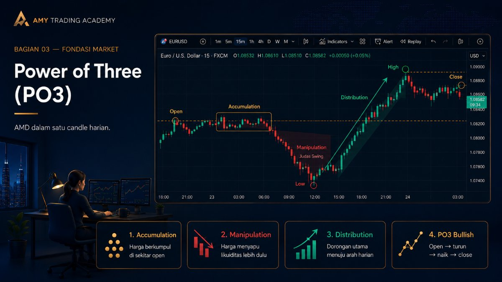
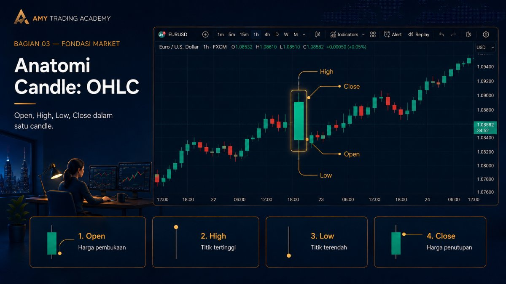
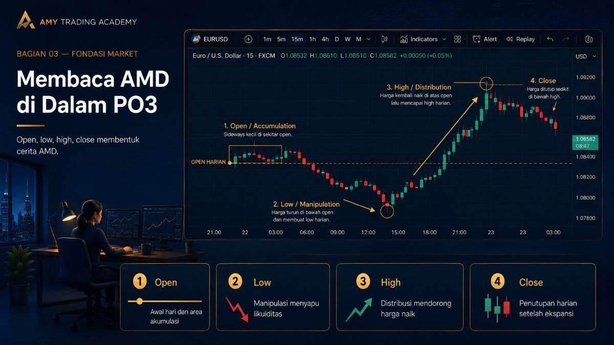
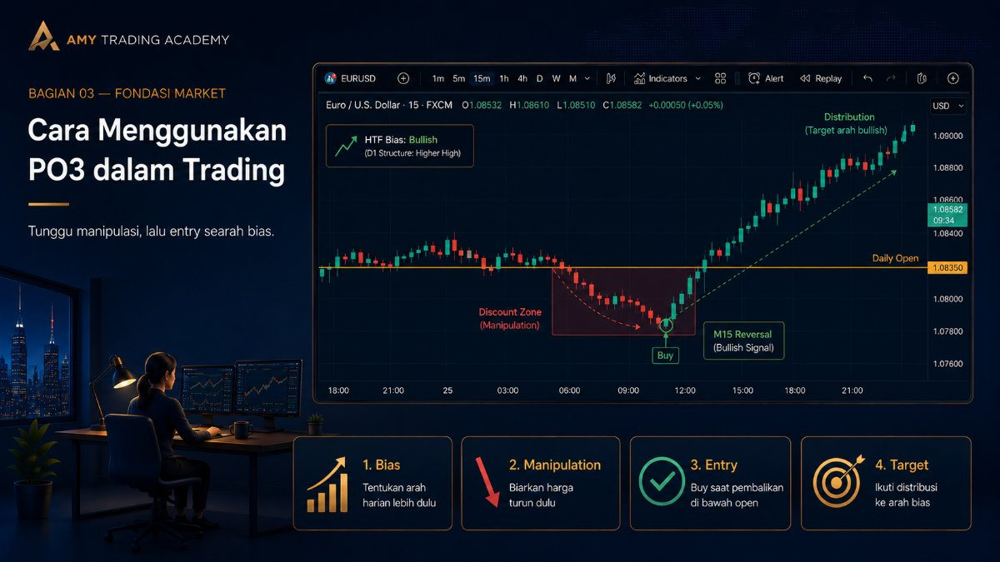

Power of Three (PO3)

Di bab sebelumnya kita sudah membahas tentang siklus AMD (Accumulation, Manipulation, Distribution). Nah, Power of Three (PO3) adalah wujud nyata dari siklus AMD tersebut yang tercetak di dalam satu batang Candlestick. Konsep ini pertama kali dipopulerkan dalam metodologi ICT (Inner Circle Trader).
Dengan memahami PO3, kamu bisa membedah anatomi sebuah candle dan memprediksi pergerakan market harian dengan akurasi yang menakutkan.
Anatomi Candle: OHLC

Sebelum masuk ke PO3, ingat kembali bahwa satu batang candle terdiri dari 4 titik harga utama: Open (Buka), High (Tertinggi), Low (Terendah), dan Close (Tutup).
Trader retail biasanya hanya melihat body hijau (bullish) atau body merah (bearish). Tapi trader Smart Money melihat OHLC sebagai sebuah cerita kronologis.
Membaca AMD di Dalam PO3

Mari kita ambil contoh Candle Harian (Daily) yang Bullish (Naik). Bagaimana cerita Power of Three-nya terbentuk?
- Open (Accumulation): Saat jam pergantian hari (misalnya jam 4 atau 5 pagi WIB), harga dibuka. Harga biasanya akan bergerak pelan, mondar-mandir di sekitar harga Open. Di sini Smart Money sedang melakukan Akumulasi.
- Low (Manipulation): Tiba-tiba di sesi Asia atau awal sesi London, harga anjlok turun ke bawah harga Open. Trader retail panik dan ikut nge-Sell karena mengira hari itu harga akan turun (downtrend). Padahal, ini adalah Manipulasi (Judas Swing). Harga menyelam ke bawah hanya untuk menyentuh Stop Loss dan mengambil likuiditas. Gerakan turun inilah yang nantinya akan meninggalkan jejak berupa Sumbu Bawah (Lower Wick).
- High (Distribution): Setelah bensin penuh dari hasil manipulasi, harga tiba-tiba berbalik arah dengan sangat kencang menembus kembali garis harga Open dan terus melesat ke atas. Ini adalah fase Ekspansi / Distribusi yang sesungguhnya, yang akan membentuk Badan (Body) candle hijau.
- Close: Di penghujung hari, harga sedikit turun dari titik tertingginya (High) dan akhirnya ditutup (Close).
Ringkasan Rumus PO3:
- Untuk Bullish (Naik): Open → Turun (Manipulasi) → Naik (Distribusi) → Close.
- Untuk Bearish (Turun): Open → Naik (Manipulasi) → Turun (Distribusi) → Close.
Cara Menggunakan PO3 dalam Trading

Konsep Power of Three ini adalah senjata yang sangat mematikan jika digabungkan dengan analisa Tren (Market Structure).
Katakanlah kamu sudah menganalisa grafik bahwa tren besar sedang Bullish. Lalu hari ini berganti, dan candle Daily baru saja dibuka. Apa yang harus kamu lakukan?
Jangan Langsung Buy! Meskipun kamu tahu trennya sedang Bullish, jangan pernah memencet Buy tepat di harga Open. Kalau kamu langsung Buy, kamu akan terseret floating minus saat fase Manipulasi (harga turun) terjadi.
Strategi yang benar menurut PO3 adalah: Tunggulah harga turun ke bawah garis Open. Biarkan market melakukan Manipulasi terlebih dahulu. Ketika harga sudah menyelam ke area diskon (di bawah harga Open), dan kamu melihat adanya tanda pembalikan di timeframe kecil (misalnya di M15), di situlah kamu Buy!
Dengan entry di bawah harga Open pada hari yang Bullish, kamu benar-benar masuk tepat di ujung sumbu bawah (wick). Saat harga akhirnya terbang (Distribusi), kamu tinggal duduk manis melihat keuntunganmu membesar tanpa tergocek oleh pergerakan palsu.
Inilah yang membuat Power of Three disebut sebagai rahasia entry dengan tingkat presisi tinggi layaknya penembak jitu (sniper).